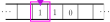
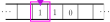

Turing Machines
So far, we've seen what it means to design string representations of decision problems and functions.
We also saw the \(\lambda\)-calculus, which is a way of writing down functions syntactically and using rewrite rules as a form of computation.
This is one way to design string-functions \(g \colon A^* \to A^*\) (using rewrite rules).
Today we're going to look at a different way, something called a Turing machine.
Roughly, a Turing machine is a kind of "mathematical model of computer hardware".
It beefs up the stack automaton concept by adding a more powerful type of data structure to automata: a tape machine.
Tape Machines
In the case of stacks, these were three basic commands, including \(\mathtt{skip}\), \(\mathtt{pop}~\sigma\), and \(\mathtt{push}~\sigma\), that operated on a finite list of symbols that represented a stack.
A tape machine (as we will define below) is a lot like a stack: it can run a set of basic commands that alter the state of a particular type of memory, which can be combined in sequence to form programs.
We fix ahead of time a set \(\Sigma\) of tape symbols.
(Tape Machine)
Given a set \(\Sigma\) of
tape symbols, a
(two-way) tape machine is a pair \((t, i)\) consisting of a function \(t \colon \mathbb Z \to \Sigma \cup \{\_\}\) called the
tape, and an integer \(i\) called the
position (of the tape head).
The symbol \(\_\) is called
blank.
The set of tape head programs \(\mathtt{Tape}\) is derived from the following grammar:
\[
E \to \mathtt{skip} \mid \mathtt{write}~\sigma \mid \mathtt{move~left} \mid \mathtt{move~right} \mid E{.}E
\]
Above, \(\sigma\) ranges over \(\Sigma \cup \{\_\}\).
Given a tape machine \((t, i)\), we define
\[\begin{aligned}
(t,i).\mathtt{skip} &= (t, i) \\
(t,i).\mathtt{write}~\sigma &= (t', i)
&\text{where } t'(j) = \begin{cases}
\sigma & \text{if } i = j \\
t(j) & \text{if } i \neq j
\end{cases}\\
(t, i).\mathtt{move~left} &= (t, i-1) \\
(t, i).\mathtt{move~right} &= (t, i+1)
\end{aligned}\]
When convenient, we will use the notation
- \({\downarrow}\sigma = \mathtt{write}~\sigma\)
- \(\mathtt{erase} = {\downarrow}\_ = \mathtt{write}~\_\)
- \({\lhd} = \mathtt{move~left}\)
- \({\rhd} = \mathtt{move~right}\)
Intuitively, \((t, i)\) represents a list of symbols (the tape) that stretches infinitely long in both directions, paired with a read/write-enabled device (the tape head).
At each position (represented as an integer), a symbol \(\sigma \in \Sigma\) can appear on the tape at that position, or the tape at that position could be blank (formally represented as "\(\_\)").
Below, the tape head is represented in pink/purple and the tape is represented as the array of squares (called cells) that streches in both directions.
 For an example of a tape machine running a tape program, let the tape machine directly above be called \((t, 0)\).
Then \(t(0) = 0\), \(t(1) = 1\), and \(t(-1) = 0\).
Running the program \((t, 0).p\) where
\[
p = \mathtt{write}~1.\mathtt{move~right}.\mathtt{write}~0.\mathtt{move~left}.\mathtt{move~left}.\mathtt{write}~1
\]
flips all the bits.
This would produce the tape below:

For an example of a tape machine running a tape program, let the tape machine directly above be called \((t, 0)\).
Then \(t(0) = 0\), \(t(1) = 1\), and \(t(-1) = 0\).
Running the program \((t, 0).p\) where
\[
p = \mathtt{write}~1.\mathtt{move~right}.\mathtt{write}~0.\mathtt{move~left}.\mathtt{move~left}.\mathtt{write}~1
\]
flips all the bits.
This would produce the tape below:

(Nuked Tape)
Write a tape program that clears the tape in the last image above, in the sense that it erases all three symbols on the tape.
(Two Steps Forward, Two Steps Back)
Show that the following tape program is equivalent to \(\mathtt{skip}\) by running the program on the tape machine \((t,0)\).
In other words, show that \((t,0).p = (t,0)\).
\[p =
\mathtt{move~right}.\mathtt{move~right}.\mathtt{move~left}.\mathtt{move~left}
\]
Turing Machines
A Turing machine is to tapes and automata what a stack automaton was to stacks and nondeterministic automata.
(Turing Machine)
A
Turing machine is a triple \(\mathcal T = (Q, \Sigma, \delta)\), where
- \(Q\) is a set of states, or programs,
- \(\Sigma\) is a set of tape symbols, and
- \(\delta\) is a relation
\[
\delta \subseteq Q \times (\Sigma \cup \{\_\}) \times \mathtt{Tape} \times Q
\]
called the transition relation.
If \((x, \sigma, p, y) \in \delta\), then we write \(x\xrightarrow{\sigma \mid p} y\) and say that \(x\)
runs \(p\) and transitions to \(y\) if \(a\) is read.
A Turing machine \(\mathcal T = (Q, \Sigma, \delta)\) is
deterministic if for any \(x \in Q\) and \(\sigma \in \Sigma \cup \{\_\}\), there is at most one transition of the form \(x \xrightarrow{\sigma \mid p} y\), i.e., if we write
\[
\delta(x, \sigma) = \{y \in Q \mid \text{there exists \(p \in \mathtt{Tape}\) such that } x \xrightarrow{\sigma \mid p} y\}
\]
then
\[
|\delta(x, \sigma)| \le 1
\]
Note that we are allowing \(\delta(x, \sigma) = \{\}\) in the definition of deterministic.
We say that \(x\) halts on input \(\sigma\) if \(\delta(x, \sigma) = \{\}\).
The states of a Turing machine are honest-to-goodness programs, in the following sense:
the transition \(x \xrightarrow{a \mid \rhd{.}{\downarrow}0} y\) should really be interpreted as a "line of code in the program \(x\)", namely
| x = | if a move right.write 0.goto y |
or if we have a very complicated tape program,
| x = |
if a
move right
write 0
goto y
|
Let's take a look at a bigger example.
(Halt, Accept, and Reject)
In the coming days, you will see a number of examples of "special" Turing machine programs.
Here is an easy example:
the program
halt is the only state of the Turing machine \(\mathcal T_{\mathrm{halt}} = (\{\mathtt{halt}\}, \Sigma, \{\})\).
In code, this might look like
| x = |
if a move right.goto y
if 1 halt
|
| y = |
if a move right.goto x
if 1 halt
|